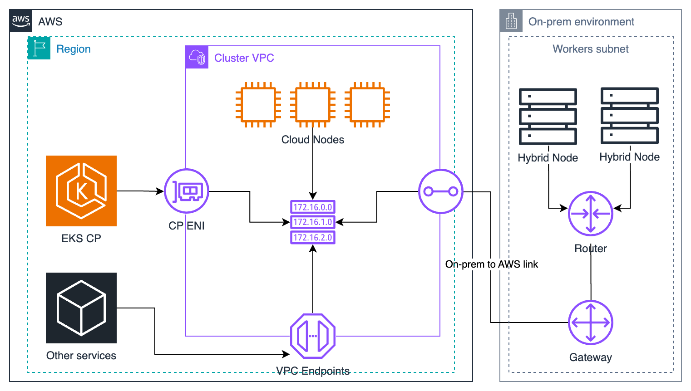

EKS Hybrid Nodes
이제는 Amazon EKS를 온프레미스에서도
Junseok Oh
Sr. Solutions Architect
Amazon Web Services

Agenda
총 95분 세션 (휴식 포함)
1
개요 & 아키텍처
25분
2
네트워킹 & 트래픽
25분
B
Break
5분
3
노드 구성 & 운영
20분
4
고급 패턴 & 전략적 가치
20분
Block 2 종료 후 5분 휴식이 있습니다. 질문은 각 Block 종료 시 또는 휴식 시간에 받겠습니다.
온프레미스 Kubernetes 운영의 현실
Control Plane 관리 부담
"버전 업그레이드, etcd 백업/복구, 인증서 갱신... 운영팀의 야근이 끊이지 않습니다"
보안 패치 & 컴플라이언스
"CVE 대응, CIS 벤치마크 준수, 감사 대응에 수개월이 소요됩니다"
모니터링 사일로
"온프렘과 클라우드 환경 간 통합 관측이 어렵습니다"
최신 AI 서비스 접근의 한계
"온프렘 단독 환경에서 최신 AI 모델 활용과 Agent 개발이 어렵습니다"
EKS Hybrid/Edge 포트폴리오
EKS Anywhere
완전한 온프레미스 Kubernetes 배포
- Control Plane + Worker 모두 온프레미스
- VMware vSphere, Bare Metal, CloudStack 지원
- AWS와 독립적으로 실행 가능 (Air-gapped 환경)
- EKS Connector로 콘솔 통합 관리 가능
EKS Hybrid Nodes
Control Plane은 AWS, Worker는 온프레미스
- AWS 관리형 Control Plane + 고객 관리 Worker
- VPN 또는 Direct Connect 연결 필수
- AWS 서비스 (Bedrock, SageMaker 등) 즉시 연계 가능
- 온프렘 GPU/특수 하드웨어 활용 + 클라우드 관리 편의성
EKS on Outposts
AWS 하드웨어를 고객 데이터센터에 설치
- AWS가 하드웨어까지 관리 (완전 관리형)
- 로컬 Kubernetes + AWS 서비스 일체형
- 최소 지연 시간, 데이터 지역성 보장
- 초기 투자 비용 및 공간 요구사항 있음
EKS Hybrid Nodes란?
EKS Control Plane(AWS 완전 관리) + Worker Node(온프레미스) 하이브리드 구성
VPN
Direct Connect
Private Endpoint

적합한 사용 사례
- 온프레미스 GPU/특수 하드웨어 활용
- 규제 준수를 위한 데이터 지역성 요구
- 지연 시간에 민감한 Edge 워크로드
- 클라우드 마이그레이션 전환기
부적합한 사용 사례
- 순수 클라우드 네이티브 워크로드 → EKS managed node group 또는 Fargate 권장
- 온프레미스 인프라가 없는 환경
아키텍처 개요: 노드 등록 흐름
↑↓ 키로 단계를 이동하세요
IaaS를 넘어서는 가치
Hybrid Nodes = AWS Managed Services Gateway
AI/ML
Bedrock, SageMaker
Database
RDS, ElastiCache
Analytics
OpenSearch, Kinesis
책임 공유 모델
AWS AWS 관리 영역
- EKS Control Plane 가용성
- etcd 백업 및 복구
- API Server 고가용성
- Kubernetes 버전 업그레이드
- Control Plane 보안 패치
Customer 고객 관리 영역
- Worker 노드 (HW, OS, 런타임)
- 온프레미스 네트워크 연결
- CNI 구성 (Cilium/Calico)
- 모니터링 에이전트 배포
- 워크로드 배포 및 관리
Control Plane 운영 부담이 AWS로 이전되어, 팀은 워크로드와 비즈니스 로직에 집중할 수 있습니다.
주요 제약 사항
도입 전 반드시 확인해야 할 사항
IPv4 전용 - IPv6 네트워크는 현재 미지원
Remote Network CIDR - 클러스터당 최대 15개까지 등록 가능
VPC CNI 미지원 - Cilium 또는 Calico 사용 필수
vCPU 기반 과금 - Hybrid Node당 $0.01/vCPU/시간
엔드포인트 모드 제한 - "Public and Private" 동시 사용 불가, 반드시 하나만 선택
네트워크 설계 시 CIDR 제한과 CNI 요구사항을 미리 검토하세요.
지원 환경
| 항목 | 지원 사양 |
|---|---|
| 운영 체제 | Ubuntu 20.04/22.04/24.04 RHEL 8/9 Amazon Linux 2023 Bottlerocket (VMware) |
| 아키텍처 | x86_64 arm64 (ARMv8.2+) |
| EKS 버전 | 1.31+ |
| 리전 | 대부분의 AWS 상용 리전 지원 |
| CNI | Cilium (권장) Calico |
| Container Runtime | containerd 1.6+ |
| 최소 하드웨어 | CPU 1 vCPU Memory 1 GiB Disk 50 GB 권장: 4코어 / 8GB / 100GB NVMe |
크리덴셜 프로바이더
노드 인증 방식 선택
SSM Hybrid Activations
- PKI 인프라 불필요 - 빠른 설정
- Activation Code + ID로 간편 등록
- 자동 자격 증명 갱신
- 세션 지속 시간: 최대 1시간
# nodeadm 설정 예시 (SSM)
apiVersion: node.eks.aws/v1alpha1
kind: NodeConfig
spec:
cluster:
name: my-cluster
region: ap-northeast-2
hybrid:
ssm:
activationCode: xxxxxxxx
activationId: xxxxxxxx-xxxx-xxxx
IAM Roles Anywhere
- 기존 PKI 인프라 활용 가능
- X.509 인증서 기반 인증
- 세션 지속 시간: 최대 12시간
- 에어갭(Air-gapped) 환경에 적합
# nodeadm 설정 예시 (IAM Roles Anywhere)
apiVersion: node.eks.aws/v1alpha1
kind: NodeConfig
spec:
cluster:
name: my-cluster
region: ap-northeast-2
hybrid:
iamRolesAnywhere:
trustAnchorArn: arn:aws:rolesanywhere:...
profileArn: arn:aws:rolesanywhere:...
roleArn: arn:aws:iam::...
Block 1 Quiz
학습 내용을 확인해 봅시다
Q1. EKS Hybrid Nodes에 적합하지 않은 사용 사례는?
Q2. EKS Hybrid Nodes가 지원하는 운영 체제 조합은?
Q3. EKS Hybrid Nodes의 최소 하드웨어 요구 사항(AWS 공식)은?